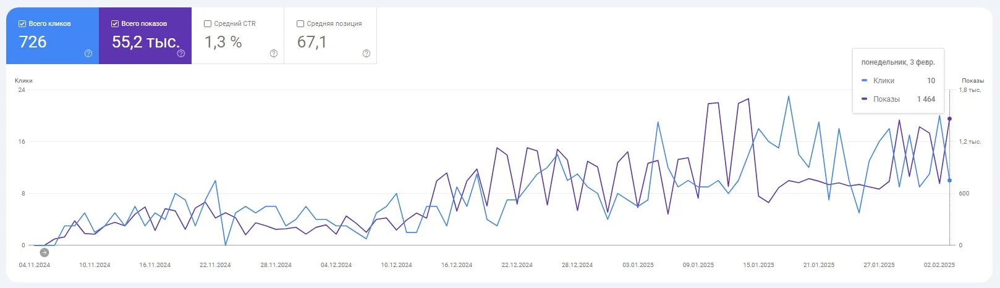
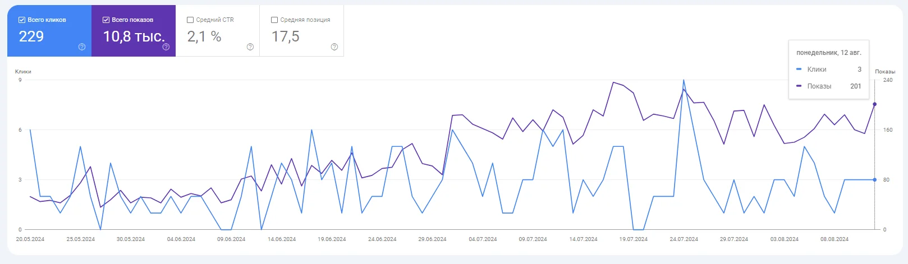
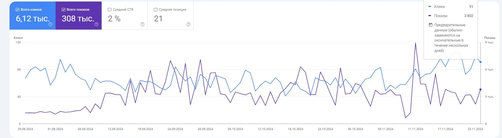
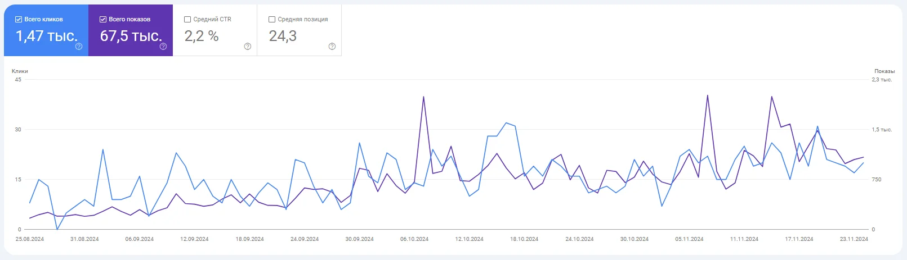
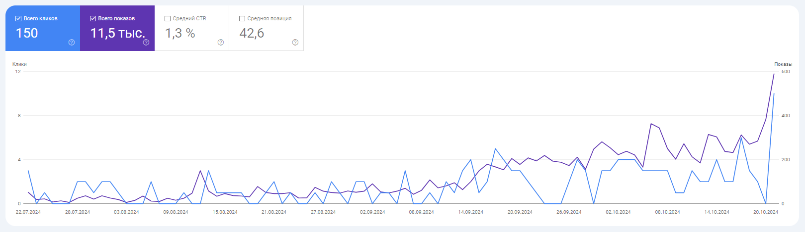
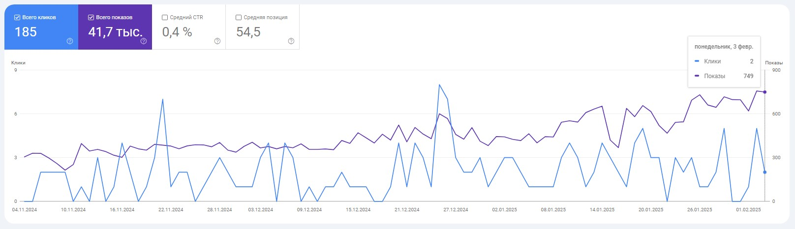
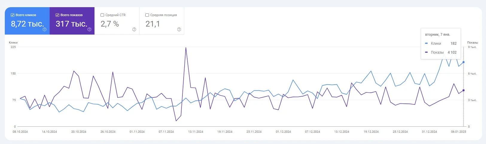
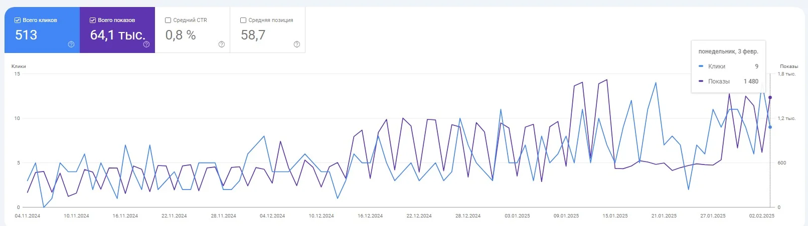
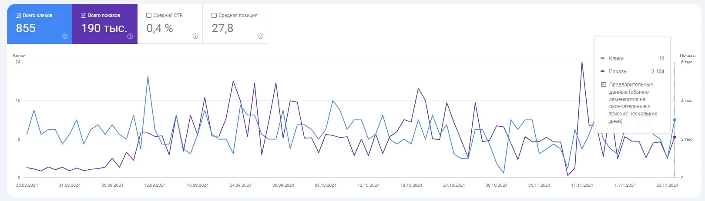

Сайт: Сайт юридичної компанії
Гео: Італія
Зроблено:
- Складала ТЗ для копірайтера, перевіряла та розміщувала написаний контент (статті, тексти для послуг та їх категорій).
Також, складала технічні завдання для програміста на основі аудиту сайту та для контент-менеджера згідно з планом робіт з контентом.
- Розширювала структуру сайту: нові категорії, статті, товари.
- Аналізувала конкурентів у ніші та створювала успішну структуру сайту на основі семантичного ядра та конкурентного аналізу.
- Збирала та кластеризувала семантичне ядро.
- Займалася моніторингом позицій, актуальності та унікальності контенту, а також аналізувала невідповідні посилання (Disavow).
- Складала та додавала Title, Description та H1 для 20 сторінок послуг та 10 сторінок товарів.
- Проводила технічний аудит сайту: аналіз дублів, метаданих, ЧПУ, швидкість завантаження, налаштування сторінок пагінації та канонічності.

Сайт: Медичні послуги
Гео: Європа
Зроблено:
- Складала ТЗ для копірайтера, перевіряла та розміщувала написаний контент (статті, тексти для послуг та їх категорій).
Також, складала технічні завдання для програміста на основі аудиту сайту та для контент-менеджера згідно з планом робіт з контентом.
- Збирала та кластеризувала семантичне ядро.
- Проводила технічний аудит сайту: аналіз дублів, метаданих, ЧПУ, швидкість завантаження, налаштування сторінок пагінації та канонічності.
- Розширювала структуру сайту: нові категорії, статті, товари.
- Аналізувала конкурентів у ніші та створювала успішну структуру сайту на основі семантичного ядра та конкурентного аналізу.
- Складала та додавала Title, Description та H1 для 30 сторінок товарів та 10 сторінок блогу.
- Займалася моніторингом позицій, актуальності та унікальності контенту, а також аналізувала невідповідні посилання (Disavow).

Сайт: Магазин будівельних товарівв
Гео: Італія
Зроблено:
- Збирала та кластеризувала семантичне ядро.
- Готувала ТЗ для копірайтера, перевіряла та розміщувала контент (статті, тексти для послуг і їх категорій).
Також складала технічні завдання для програміста за результатами аудиту сайту та для контент-менеджера згідно з планом роботи з контентом.
- Проводила технічний аудит сайту: аналізувала дублікати, метадані, ЧПУ, швидкість завантаження, налаштування сторінок пагінації та канонічності.
- Розширювала структуру сайту, додаючи нові категорії, статті, товари.
- Аналізувала конкурентів у ніші та вибудовувала ефективну структуру сайту на основі семантичного ядра та конкурентного аналізу.
- Складала та додавала Title, Description і H1 для 100 сторінок товарів.
- Моніторила позиції, актуальність і унікальність контенту, а також аналізувала непотрібні посилання (Disavow).

Сайт: Сайт салону краси
Гео: Іспанія
Зроблено:
- Збирала і кластеризувала семантичне ядро.
- Проводила технічний аудит сайту: аналіз дублів, метаданих, ЧПУ, швидкості завантаження, налаштування сторінок пагінації та канонічності.
- Розширювала структуру сайту: додавала нові категорії, статті, послуги.
- Складала та додавала Title, Description та H1 для 30 сторінок послуг і 10 статей блогу.
- Аналізувала конкурентів у ніші та створювала ефективну структуру сайту на основі семантичного ядра та конкурентного аналізу.
- Займалася моніторингом позицій, актуальності та унікальності контенту, а також аналізом невідповідних посилань Disavow.
- Готувала ТЗ для копірайтера, перевіряла та розміщувала написаний контент (статті, тексти для послуг та їх категорій).
Також складала технічні завдання для програміста на основі аудиту сайту та для контент-менеджера згідно з планом робіт із контенту.

Сайт: Магазин спортивного одягу
Гео: Польша
Зроблено:
- Складала та додавала Title, Description та H1 для 100 сторінок товару.
- Готувала ТЗ для копірайтера, перевіряла та розміщувала написаний контент (статті, тексти для послуг та їх категорій).
Також складала технічні завдання для програміста на основі аудиту сайту та для контент-менеджера згідно з планом робіт із контенту.
- Збирала і кластеризувала семантичне ядро.
- Розширювала структуру сайту: додавала нові категорії, статті, товари.
- Проводила технічний аудит сайту: аналіз дублів, метаданих, ЧПУ, швидкості завантаження, налаштування сторінок пагінації та канонічності.
- Аналізувала конкурентів у ніші та створювала ефективну структуру сайту на основі семантичного ядра та конкурентного аналізу.
- Займалася моніторингом позицій, актуальності та унікальності контенту, а також аналізом невідповідних посилань Disavow.

Сайт: Курси англійської мови
Гео: Україна
Зроблено:
- Займалася моніторингом позицій, актуальності та унікальності контенту, а також аналізом невідповідних посилань Disavow.
- Складала та додавала Title, Description і H1 для 40 сторінок послуг.
- Готувала ТЗ для копірайтера, перевіряла та розміщувала написаний контент (статті, тексти для послуг та їх категорій).
Також складала технічні завдання для програміста на основі аудиту сайту та для контент-менеджера згідно з планом робіт із контенту.
- Аналізувала конкурентів у ніші та створювала ефективну структуру сайту на основі семантичного ядра та конкурентного аналізу.
- Збирала і кластеризувала семантичне ядро.
- Розширювала структуру сайту: додавала нові категорії, статті, товари.
- Проводила технічний аудит сайту: аналіз дублів, метаданих, ЧПУ, швидкості завантаження, налаштування сторінок пагінації та канонічності.

Сайт: Магазин з продажу та виготовлення електрозапчастин
Гео: Польша
Зроблено:
- Розширювала структуру сайту: нові категорії, статті, товари;
- Займалася моніторингом позицій, актуальності та унікальності контенту, а також аналізом невідповідних посилань Disavow;
- Складала та додавала Title, Description і H1 для 10 сторінок послуг та 10 сторінок блогу;
- Проводила технічний аудит сайту: аналіз дублів, метаданих, ЧПУ, швидкості завантаження, налаштування сторінок пагінації та канонічності;
- Готувала ТЗ для копірайтера, перевіряла та розміщувала написаний контент (статті, тексти для послуг та їх категорій).
Також складала технічні завдання для програміста на основі аудиту сайту та для контент-менеджера згідно з планом робіт із контенту;
- Аналізувала конкурентів у ніші та створювала ефективну структуру сайту на основі семантичного ядра та конкурентного аналізу;
- Збирала і кластеризувала семантичне ядро;

Сайт: Сайт одягу
Гео:Європа
Зроблено:
- Розширювала структуру сайту: нові категорії, статті, послуги;
- Аналізувала конкурентів у ніші та створювала ефективну структуру сайту на основі семантичного ядра та конкурентного аналізу;
- Займалася моніторингом позицій, актуальності та унікальності контенту, а також аналізом невідповідних посилань Disavow;
- Складала та додавала Title, Description і H1 для 50 сторінок послуг;
- Проводила технічний аудит сайту: аналіз дублів, метаданих, ЧПУ, швидкості завантаження, налаштування сторінок пагінації та канонічності;
- Збирала і кластеризувала семантичне ядро;
- Готувала ТЗ для копірайтера, перевіряла та розміщувала написаний контент (статті, тексти для послуг та їх категорій). Також складала технічні завдання для програміста на основі аудиту сайту та для контент-менеджера згідно з планом робіт із контенту;

Сайт:Сайт туристичних послуг
Гео: Польша
Зроблено:
- Збирала і кластеризувала семантичне ядро;
- Проводила технічний аудит сайту: аналіз дублів, метаданих, ЧПУ, швидкості завантаження, налаштування сторінок пагінації та канонічності;
- Складала та додавала Title, Description і H1 для 70 сторінок послуг та 200 статей блогу;
- Розширювала структуру сайту: нові категорії, статті, товари;
- Аналізувала конкурентів у ніші та складала ефективну структуру сайту на основі семантичного ядра та конкурентного аналізу;
- Складала ТЗ для копірайтера, перевіряла та розміщувала написаний контент (статті, тексти для послуг та їх категорій). Також складала технічні завдання для програміста на основі аудиту сайту та для контент-менеджера на основі плану робіт з контенту;
- Займалася моніторингом позицій, актуальності та унікальності контенту, невідповідних посилань Disavow.
